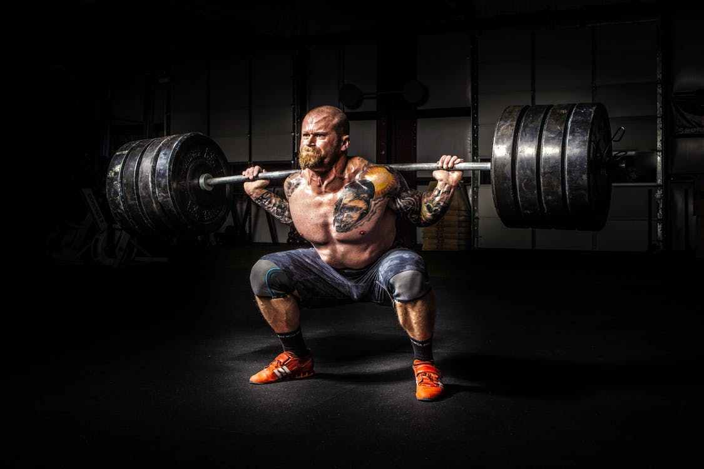
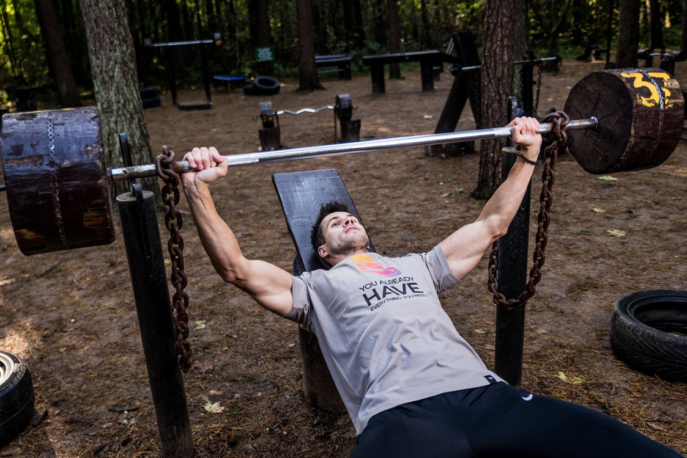

Maastaveto on moninivelliikkeiden parhaimmistoa ja erinomainen liike myöskin lihasmassan ja voiman kasvattamiseen. Liike perustuu ihan tavallisen elämän liikkeeseen, kun joudutaan nostamaan jokin painava esine maasta. Liikeessä mennään suhteelliseen kyykky-asentoon, mutta ei kuitenkaan anneta lantion mennä polvilinjan alapuolella, vaan jäädään 5-15 cm sen yläpuolelle. Tarkoittaa siis sitä, ettei reisilihaksen yläosa saa olla vaakatasossa liikkeen alaosassa. Selän on myös todella tärkeää pysyä tässä liikkeessä suorana, mutta sitä ei saa ylisuoristaa, koska se myös altistaa loukkaantumisille. Tanko tulee noin parin sormen päähän sääristä liikkeen alaosassa. Kun, painoa lähdetään nostamaan on tärkeää, että takareidet ja selän lihakset ovat jännittyneet ja vatsa on otettu täyteen ilmaa. Kun, paino on saatu nostettua onnistuneesti ylös painon annetaan tulla painovoiman alas, eikä sitä vastusteta niin kuin perinteisesti saliliikkeissä tehtäisiin, tämä johtuu siitä, että maastavedossa on turvallisempaa tehdä näin ja liike on muutenkin tarkoitettu voiman ja räjähtävyyden kasvatukseen. Kun, paino on maassa pysähtyneenä, otetaan uudelleen happea ja pidetään vatsa ja lihakset tiukkana ja tehdään seuraava toisto. Tästä myöskin tulee englannin kielinen nimitys liikkeelle eli deadlift. txt txt txt txt txt txt txt txt txt txt txt txt txt txt txt txt txt txt txt txt txt txt txt txt txt txt txt txt txt txt txt txt txt txt txt txt txt txt txt txt txt txt txt txt txt txt txt txt txt txt txt txt txt txt txt txt txt txt txt txt txt txt txt txt txt txt txt txt txt txt txt txt txt txt txt txt txt txt txt txt txt txt txt txt txt txt txt txt txt txt txt txt txt txt txt txt txt txt txt txt txt txt txt txt txt txt txt txt txt txt txt txt txt txt txt txt txt txt txt txt txt txt txt txt txt txt txt txt txt txt txt txt txt txt txt txt txt txt txt txt txt txt txt txt txt txt txt txt txt txt txt txt txt txt txt txt txt txt txt txt txt txt txt txt txt txt txt txt txt txt txt txt txt txt txt txt txt txt txt txt txt txt txt txt txt txt txt txt txt txt txt txt txt txt txt txt txt txt txt txt txt txt txt txt txt txt txt txt txt txt txt txt txt txt txt txt txt txt txt txt txt txt txt txt txt txt txt txt txt txt txt txt txt txt txt txt txt txt txt txt txt txt txt txt txt txt txt txt txt txt txt txt txt txt txt txt txt txt txt txt txt txt txt txt txt txt txt txt txt txt txt txt txt txt txt txt txt txt txt txt txt txt txt txt txt txt txt txt txt txt txt txt txt txt txt txt txt txt txt txt txt txt txt txt txt txt txt txt txt txt txt txt txt txt txt txt txt txt txt txt txt txt txt txt txt txt txt txt txt txt txt txt txt txt txt txt txt txt txt txt txt txt txt txt txt txt txt txt txt txt txt txt txt txt txt txt txt txt txt txt txt txt txt txt txt txt txt txt txt txt txt txt txt txt txt txt txt txt txt txt txt txt txt txt txt txt txt txt txt txt txt txt txt txt txt txt txt txt txt txt txt txt txt txt txt txt txt txt txt txt txt txt txt txt txt txt txt txt txt txt txt txt txt txt txt txt txt txt txt txt txt txt txt txt txt txt txt txt txt txt txt txt txt txt txt txt txt txt txt txt txt txt txt txt txt txt txt txt txt txt txt txt txt txt txt txt txt txt txt txt txt txt txt txt txt txt txt txt txt txt txt txt txt txt txt txt txt txt txt txt txt txt txt txt txt txt txt txt txt txt txt txt txt txt txt txt txt txt txt txt txt txt txt txt txt txt txt txt txt txt txt txt txt txt txt txt txt txt txt txt txt txt txt txt txt txt txt txt txt txt txt txt txt txt txt txt txt txt txt txt txt txt txt txt txt txt txt txt txt txt txt txt txt txt txt txt txt txt txt txt txt txt txt txt txt txt txt txt txt txt txt txt txt txt txt txt txt txt txt txt txt txt txt txt txt txt txt txt txt txt txt txt txt txt txt txt txt txt txt txt txt txt txt txt txt txt txt txt txt txt txt txt txt txt txt txt txt txt txt txt txt txt txt txt txt txt txt txt txt txt txt txt txt txt txt txt txt txt txt txt txt txt txt txt txt txt txt txt txt txt txt txt txt txt txt txt txt txt txt txt txt txt txt txt txt txt txt txt txt txt txt txt txt txt txt txt txt txt txt txt txt txt txt txt txt txt txt txt txt txt txt txt txt txt txt txt txt txt txt txt txt txt txt txt txt txt txt txt txt txt txt txt txt txt txt txt txt txt txt txt txt txt txt txt txt txt txt txt txt txt txt txt txt txt txt txt txt txt txt txt txt txt txt txt txt txt txt txt txt txt txt txt txt txt txt txt txt txt txt txt txt txt txt txt txt txt txt txt txt txt txt txt txt txt txt txt txt txt txt txt txt txt txt txt txt txt txt txt txt txt txt txt txt txt txt txt txt txt txt txt txt txt txt txt txt txt txt txt txt txt txt txt txt txt txt txt txt txt txt txt txt txt txt txt txt txt txt txt txt txt txt txt txt txt txt txt txt txt txt txt txt txt txt txt txt txt txt txt txt txt txt txt txt txt txt txt txt txt txt txt txt txt txt txt txt txt txt txt txt txt txt txt txt txt txt txt txt txt txt txt txt txt txt txt txt txt txt txt txt txt txt txt txt txt txt txt txt txt txt txt txt txt txt txt txt txt txt txt txt txt txt txt txt txt txt txt txt txt txt txt txt txt txt txt txt txt txt txt txt txt txt txt txt txt txt txt txt txt txt txt txt txt txt txt txt txt txt txt txt txt txt txt txt txt txt txt txt txt txt txt txt txt txt txt txt txt txt txt txt txt txt txt txt txt txt txt txt txt txt txt txt txt txt txt txt txt txt txt txt txt txt txt txt txt txt txt txt txt txt txt txt txt txt txt txt txt txt txt txt txt txt txt txt txt txt txt txt txt txt txt txt txt txt txt txt txt txt txt txt txt txt txt txt txt txt txt txt txt txt txt txt txt txt txt txt txt txt txt txt txt txt txt txt txt txt txt txt txt txt txt txt txt txt txt txt txt txt txt txt txt txt txt txt txt txt txt txt txt txt txt txt txt txt txt txt txt txt txt txt txt txt txt txt txt txt txt txt txt txt txt txt txt txt txt txt txt txt txt txt txt txt txt txt txt txt txt txt txt txt txt txt txt txt txt txt txt txt txt txt txt txt txt txt txt txt txt txt txt txt txt txt txt txt txt txt txt txt txt txt txt txt txt txt txt txt txt txt txt txt txt txt txt txt txt txt txt txt txt txt txt txt txt txt txt txt txt txt txt txt txt txt txt txt txt txt txt txt txt txt txt txt txt txt txt txt txt txt txt txt txt txt txt txt txt txt txt txt txt txt txt txt txt txt txt txt txt txt txt txt txt txt txt txt txt txt txt txt txt txt txt txt txt txt txt txt txt txt txt txt txt txt txt txt txt txt txt txt txt txt txt txt txt txt txt txt txt txt txt txt txt txt txt txt txt txt txt txt txt txt txt txt txt txt txt txt txt txt txt txt txt txt txt txt txt txt txt txt txt txt txt txt txt txt txt txt txt txt txt txt txt txt txt txt txt txt txt txt txt txt txt txt txt txt txt txt txt txt txt txt txt txt txt txt txt txt txt txt txt txt txt txt txt txt txt txt txt txt txt txt txt txt txt txt txt txt txt txt txt txt txt txt txt txt txt txt txt txt txt txt txt txt txt txt txt txt txt txt txt txt txt txt txt txt txt txt txt txt txt txt txt txt txt txt txt txt txt txt txt txt txt txt txt txt txt txt txt txt txt txt txt txt txt txt txt txt txt txt txt txt txt txt txt txt txt txt txt txt txt txt txt txt txt txt txt txt txt txt txt txt txt txt txt txt txt txt txt txt txt txt txt txt txt txt txt txt txt txt txt txt txt txt txt txt txt txt txt txt txt txt txt txt txt txt txt txt txt txt txt txt txt txt txt txt txt txt txt txt txt txt txt txt txt txt txt txt txt txt txt txt txt txt txt txt txt txt txt txt txt txt txt txt txt txt txt txt txt txt txt txt txt

